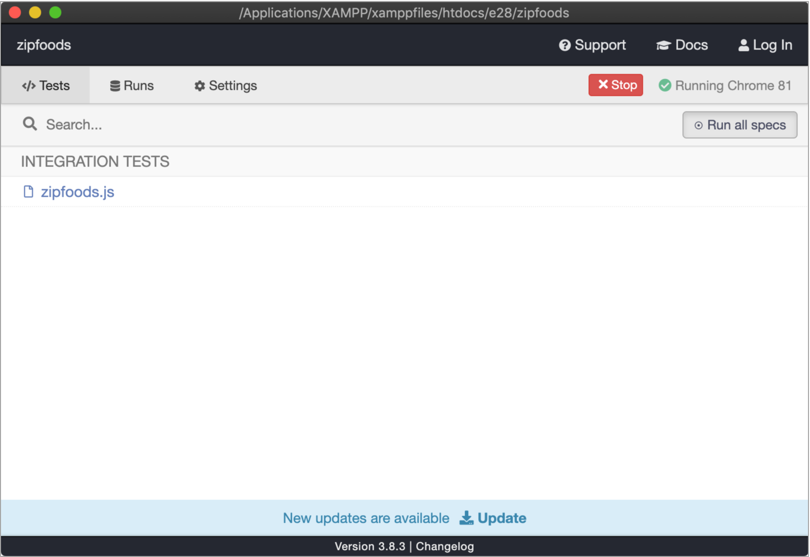
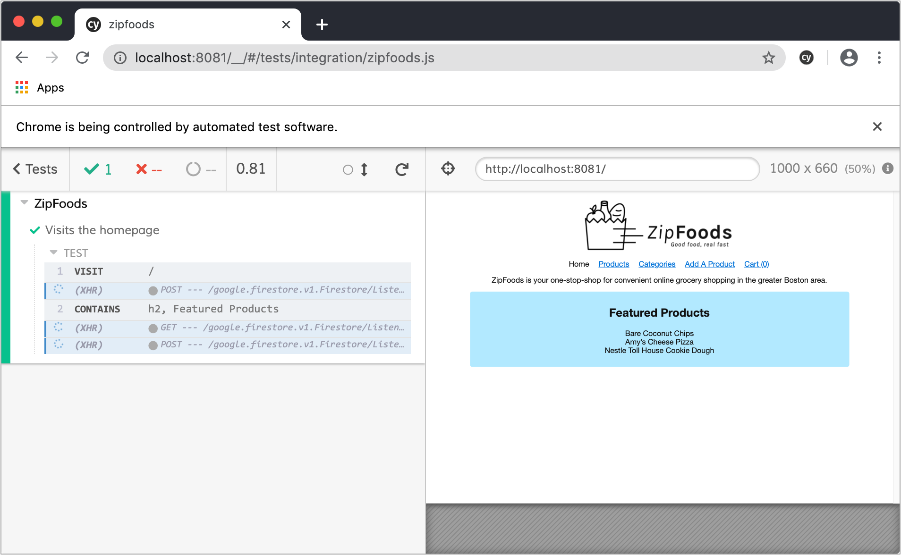
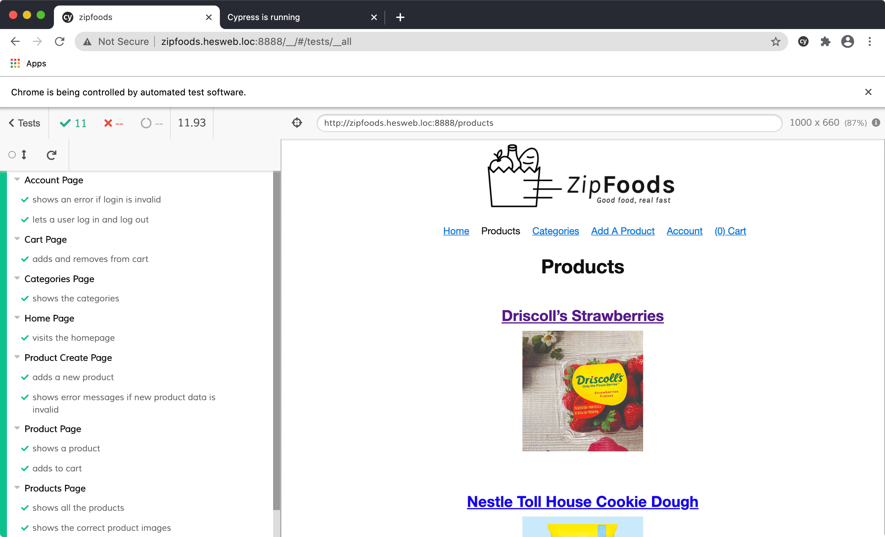

Testing: E2E tests w/ Cypress
Setup
To set up end-to-end testing in our application, we’ll start by adding the Cypress Vue CLI plugin:
$ vue add @vue/cli-plugin-e2e-cypress
This will...
- Install the
@vue/cli-plugin-e2e-cypressdependency - Generate files in
/tests/e2e - Add the
npm run test:e2eto your npm scripts inpackage.json
ADDENDUM TO LECTURE VIDEO:
By default, the npm run test:e2e command will run your application in the
production mode, which will cause it to make requests to your production API url (ref).
To override this behavior, update package.json so the test:e2e command
includes
the flag --mode=development:
"scripts": {
"serve": "vue-cli-service serve",
"build": "vue-cli-service build",
"test:e2e": "vue-cli-service test:e2e --mode=development",
"lint": "vue-cli-service lint"
},
Summary
When working with Cypress, you create specs (specifications) which describe the expectations of features/pages in your application.
Example spec /tests/e2e/specs/test.js:
describe('ZipFoods', () => {
it('Visits the homepage', () => {
cy.visit('/')
cy.contains('h2', 'Featured Products')
})
})
This spec will visit the homepage of your app and assert there is a h2 element containing the text
Featured Products.
With this spec set up, load Cypress with the following command:
$ npm run test:e2e
This will create a new Cypress GUI instance that will allow you to run individual specs, or all your specs at once.
When you run specs, Cypress will open a Chrome window and run the tests within the spec, reporting back on success or failure.
Examples
In lecture, I’ll expand on the above test to demonstrate a variety of Cypress features. Here’s a fully commented version of the resulting test file I’ll end up with:
// /tests/e2e/specs/zipfoods.js
// `describe` is a Cypress method used to group tests
// It takes two arguments:
// 1) The name of the test
// 2) A callback function with tests
describe('Zipfoods', () => {
// Define a product we can use throughout our tests
let product = {
name: 'Driscoll’s Strawberries',
id: 1
}
// `it` is another Cypress method, and it's used to define individual tests within our groups
// It takes two arguments:
// 1) A string explaining what the test should do
// 2) A callback function which contains the actual test
it('shows all the products', () => {
// https://docs.cypress.io/api/commands/visit.html#Syntax)
cy.visit('/products')
// Confirm we see a specific product
// https://docs.cypress.io/api/commands/contains.html#Syntax
cy.contains('.product-name', product.name)
// Confirm we see all 10 products
// https://docs.cypress.io/api/commands/get.html#Syntax
// https://docs.cypress.io/api/commands/should.html#Syntax
// https://docs.cypress.io/guides/references/assertions.html#Length
cy.get('.product-name').should('have.length', 10);
// Confirm we can click on a product and get to its indiviudal page
// https://docs.cypress.io/api/commands/click.html#Syntax
cy.get('[data-test="product-name"]').contains(product.name).click();
// Note in the above example switched to using a custom selector (data-test) to target
// the element on the page. This can be useful when testing as it makes
// our testing-specific selectors independent of styling-specific selectors (classes, ids, etc,)
cy.contains('[data-test="product-price"]', product.name);
})
it('interacts with cart', () => {
cy.visit('/products/' + product.id);
cy.get('[data-test="add-to-cart-button"]').click();
cy.contains('[data-test="cart-count"]', 1);
cy.visit('/cart');
cy.contains('[data-test="cart-contents"]', '1 x ' + product.name);
cy.get('[data-test="remove-from-cart-button"]').click();
cy.contains('[data-test="cart-count"]', 0);
cy.contains('No items');
})
})
ZipFoods full tests
After the lecture video, I expanded on the test examples within ZipFoods so you have more examples to refer to, and to get a sense of the kind of test coverage you should aim for in Project 3.
Here are links to the test files on Github:
And here’s a screenshot showing all the tests successfully passing:
